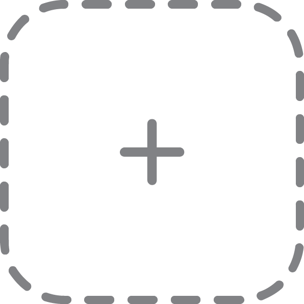

drag and drop an image here
arrow_forward
glimgfx
Undo Last Effect
undo
Stack Effect
playlist_add
Color Manipulation
Make Binary
filter_b_and_w
Make Grayscale
monochrome_photos
Invert Colours
invert_colors
Green is Blue
shuffle
Red is Blue
shuffle
Invert Blue
shuffle
Basic Kernel Effects
Fast Blur
blur_on
Fast Bloom
adjust
Detect Edges
select_all
Custom Convolution
Apply Filter
border_inner
Chroma Key Removal
Threshold:
Remove Chroma
tune
Download Result
file_download